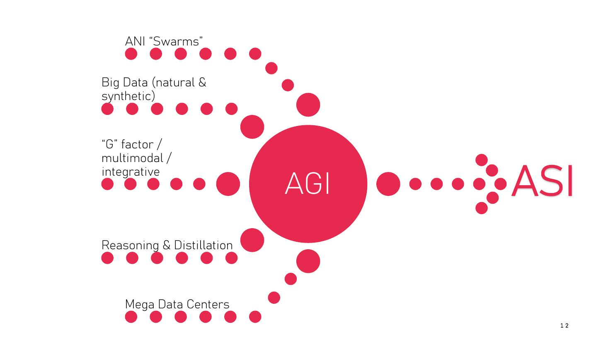

DIAPOSITIVES 12 et 13
Le cœur philosophique de l’exposé, et sa proposition la plus originale.

La figure dit déjà quelque chose : l’AGI n’y arrive pas par une percée unique mais par convergence. Et l’ASI n’est pas un sixième apport : c’est ce qui sort de l’AGI, en pointillés.
C’est le passage le plus dense de l’exposé et il ne figure que dans les notes. Il est repris ici intégralement.
La troisième question est la proposition la plus originale de l’exposé, et elle contredit frontalement la définition species-neutral posée en fiche 5 : si l’on prend au sérieux l’altérité d’une intelligence de chauve-souris ou de champignon, alors la neutralité d’espèce cesse d’être une commodité méthodologique et devient un problème. La référence à la chauve-souris n’est pas innocente : c’est celle de Thomas Nagel, et le mot qualia, deux lignes plus bas, le confirme.
La quatrième question referme la boucle sur la fiche 2 : plus de calcul ne résoudra pas une question qui n’est pas de l’ordre du calcul.
La diapositive suivante met en regard la couverture de Superintelligence. Paths, Dangers, Strategies (Nick Bostrom, 2014) et le portrait de son auteur, avec une bulle de pensée : « Are we doomed? »
La question que pose l’orateur est précise : une fois l’AGI atteinte, l’accélération de l’intelligence ne va-t-elle pas devenir exponentielle ? L’hypothèse : l’AGI commence par fabriquer des morceaux de code, améliorer son propre code, optimiser son fonctionnement dans les architectures existantes.
Y en aurait-il déjà des exemples ? Il semble bien que oui.
L’orateur cite à l’appui une pull request précise du dépôt llama.cpp. Les étapes suivantes, telles qu’il les liste : optimisation du code → futures architectures → futures puces → IA physiques → autonomie, selon la progression agents → opérateurs → innovateurs.
Note de l’orateur, reprise intégralement. « L’accélération est égale à la vitesse (la dérivée seconde est égale à la dérivée). Plus elle va vite, plus elle accélère. Il y a un rythme constant et on ajoute un pourcentage constant entre deux points de la courbe… Toute la question est de savoir où on en est sur l’exponentielle. On ne peut pas le savoir.
Localement, d’une année sur l’autre, il ne se passe rien. Quand on zoome sur la courbe, ce qu’on voit entre deux points c’est une droite. Quand on zoome arrière on arrive à l’extrême à une courbe en L : la droite est plate entre −R et 0, et ensuite la droite devient verticale en 0. Tout d’un coup il se passe quelque chose quand on voit l’ensemble sur un siècle, ou sur un millénaire. À partir du moment où vous avez quelque chose qui se modifie lui-même, on entre dans une exponentielle. »
L’argument est élégant parce qu’il est épistémique et non prophétique : il ne dit pas que la catastrophe arrive, il dit qu’on ne peut pas savoir où l’on se trouve sur la courbe. C’est une raison d’agir qui ne dépend d’aucune prédiction — et c’est ce qui distingue cette position de celle des « doomers » décrits en fiche 4.